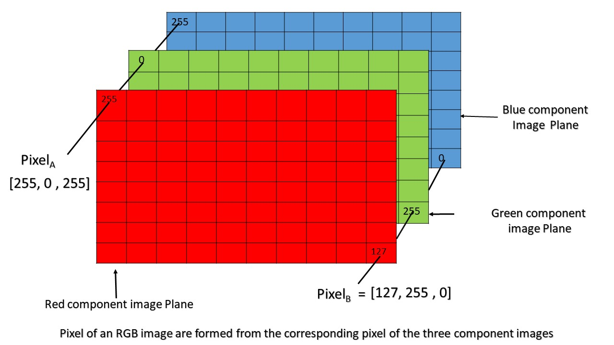

2.6 배열(array)
- 통계학의 관점에서 R의 행렬의 행은 조사 대상이 되는 사람, 동물 등 관측 대상에 해당하고, 열은 대상의 특성을 표현하는 변수(예: 몸무게, 키, 혈압 등)에 해당 \(\rightarrow\) 2차원 구조
- 위와 같은 데이터를 년 단위로 수집한다면? \(\rightarrow\) 한 대상자에 해당하는 변수들은 시간에 따라 변함 \(\rightarrow\) 시간 차원이 하나 더 존재!
- R에서 이러한 형태의 데이터 구조를 배열(array)이라고 지칭함
2.6.1 배열의 생성 및 색인
- 동일한 유형의 데이터가 2차원 이상으로 구성된 데이터 구조
- 동일한 차원(\(n\times p\))의 배열(행렬)이 \(k\) 개 방에 저장된 데이터 구조
- 배열 생성 함수
# array() 함수 인수 구조
array(data, # 저장할 데이터 벡터 또는 행렬
dim, # 배열의 차원 지정
dimnames # 배열 차원 명칭
)- 통계학과 3명의 학생에 대한 중간고사 기준 한 번의 퀴즈와 중간고사 점수, 그리고 기말고사 기준 한 번의 퀴즈와 기말고사 점수 데이터 가정
x <- c(75, 84, 93, 65, 78, 92)
y <- c(82, 78, 85, 88, 75, 88)
first_term <- matrix(x, nrow = 3, ncol = 2)
second_term <- matrix(y, nrow = 3, ncol = 2)
first_term [,1] [,2]
[1,] 75 65
[2,] 84 78
[3,] 93 92second_term [,1] [,2]
[1,] 82 88
[2,] 78 75
[3,] 85 88# 위 두 데이터를 2층 짜리 배열로 구성
Z <- array(data = c(first_term, second_term),
dim = c(3, 2, 2))
Z, , 1
[,1] [,2]
[1,] 75 65
[2,] 84 78
[3,] 93 92
, , 2
[,1] [,2]
[1,] 82 88
[2,] 78 75
[3,] 85 88# Z의 속성
attributes(Z)$dim
[1] 3 2 2# Z의 클래스
class(Z)[1] "array"# Z의 구조
str(Z) num [1:3, 1:2, 1:2] 75 84 93 65 78 92 82 78 85 88 ...- 배열 내 데이터 접근은 색인을 통해 가능(벡터 행렬과 동일)
# 첫 번째 층만 추출
Z[, , 1] [,1] [,2]
[1,] 75 65
[2,] 84 78
[3,] 93 92# 두 번째 층에서 2-3행 만 추출
Z[2:3, , 2] [,1] [,2]
[1,] 78 75
[2,] 85 882.6.2 배열의 확장 예제
데이터 사이언스 스쿨 참고
- 배열 구조를 갖는 가장 대표적인 데이터 중 하나가 이미지(사진)
- 이미지 데이터는 픽셀(pixel) 이라는 세분화된 작은 이미지를 직사각형 형태로 모은 형태
- 전체 이미지는 세로픽셀수 \(\times\) 가로픽셀수 로 표현됨 \(\rightarrow\) 행렬
- 픽셀의 색을 숫자로 표현하는 방식을 색공간(color space)라고 명칭
- 대표적 색공간은 흑백스케일(grey scale), RGB (Red-Green-Blue), HSV(Hue-Saturation-Value) 방식
- RGB 색공간을 사용한 경우 각 색공간별로 동일한 크기의 행렬이 3개 층으로 저장된 상태 \(\rightarrow\) 배열
- RGB는 0 ~ 255 까지 값을 갖고 빨강색 (255, 0, 0), 녹색 (0, 255, 0), 파란색은 (0, 0, 255)임

Figure 2.2: https://www.geeksforgeeks.org/matlab-rgb-image-representation/ 에서 발췌
목표
- R에서 웹 url로 이미지를 불러오기
- 불러온 이미지를 R에서 plotting 해보기
- 이미지 데이터를 직접 수정 해보기
- 이미지 입출력 패키지 installation
install.packages("jpeg") # jpeg 파일 입출력 관련 package
install.packages("cowplot") # ggplot add-on package- 관련 패키지 불러오기
require(tidyverse)
require(jpeg)
require(cowplot)- 이미지 불러오기
myurl <- "https://img.livescore.co.kr/data/editor/1906/ba517de8162d92f4ea0e9de0ec98ba02.jpg"
z <- tempfile()
download.file(myurl,z,mode="wb")
pic <- readJPEG(z)- 이미지 그래프 출력창에서 확인

- 이미지 임의 부분 편집하기
pic[300:460, 440:520, 1] <- 0.5
pic[300:460, 440:520, 2] <- 0.5
pic[300:460, 440:520, 3] <- 0.5
ggdraw() +
draw_image(pic)
- RGB값을 무작위로 샘플링 후 매개변수로 노이즈 가중치 조절해 보기
pic <- readJPEG(z)
yr <- pic[300:460, 440:520, 1]
yg <- pic[300:460, 440:520, 2]
yb <- pic[300:460, 440:520, 3]
n <- nrow(yr); p <- ncol(yr)
t <- 0.2
wr <- t * yr + (1 - t)*matrix(runif(length(yr)), nrow = n, ncol = p)
wg <- t * yg + (1 - t)*matrix(runif(length(yg)), nrow = n, ncol = p)
wb <- t * yb + (1 - t)*matrix(runif(length(yb)), nrow = n, ncol = p)
pic[300:460, 440:520, 1] <- wr
pic[300:460, 440:520, 2] <- wg
pic[300:460, 440:520, 3] <- wb
ggdraw() +
draw_image(pic)